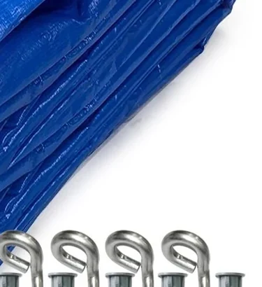
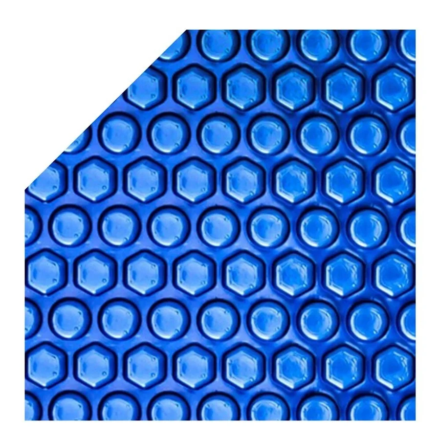

Coperture protettive per piscine
Teloni in polietilene contro foglie, polvere e sporco. Dimensioni e fissaggi da verificare.
Coperture per piscine, teli termici, protezione per aree ricreative e gazebo per distributori e acquirenti B2B.

Teloni in polietilene contro foglie, polvere e sporco. Dimensioni e fissaggi da verificare.

Coperture in PVC rinforzato e sistemi di fissaggio secondo le specifiche tecniche.

Teli termici a bolle per ridurre l’evaporazione e aiutare a trattenere il calore.

Gazebo pieghevoli e pareti laterali per giardini, eventi e aree ricreative.
Specificare tipo, dimensioni, forma, materiale, spessore, colore, accessori, quantità, destinazione e uso.
Coperture termiche, protettive e di sicurezza hanno funzioni diverse. Non presumere la portata o la prevenzione cadute senza verifica tecnica.
Fotografie originali senza marchi. Prezzi, disponibilità e condizioni da confermare.